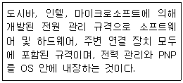
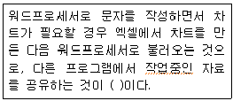
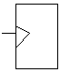
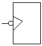
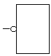
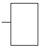
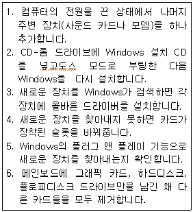

PC정비사-1급 (2011-10-09 기출문제)
1과목: PC운영체제
1. 컴퓨터 처리 시스템의 성능을 향상시키고 데이터 처리의 생산성 향상을 위해 고려되어야 할 사항으로 잘못된 것은?
- 컴퓨터 프로그램의 처리와 제어 시스템의 동작상태를 항시 감시해야 한다.
- 데이터 처리를 위한 각종 컴퓨터 구성 H/W 요소의 활용이 효율적으로 이루어져야 한다.
- 데이터를 처리하기 위한 정보는 완벽한 상태로 준비가 되어야 한다.
- 컴퓨터를 합리적이고 능률적으로 이용하기 위해서 인적자원과 업무수행의 환경과 조건이 구비되어야 한다.
(정답률: 49%)

2. 다음 보기 중 나머지와 성격이 다른 하나는?
- Windows VISTA
- Lotus Notes
- 리눅스
- MAC OS X
(정답률: 64%)
3. 다음 설명이 의미하는 용어로 올바른 것은?

- APM(Advanced Power Management)
- ACPI(Advanced Configuration and Power Interface)
- ESCD(Extended System Configuration Data)
- DMI(Desktop Management Interface)
(정답률: 47%)
4. ( ) 에 적당한 용어는?

- OLE
- DLL
- INI
- PCX
(정답률: 57%)
5. 운영체제의 운영방식 중 멀티프로그래밍에 해당하는 것은?
- 하나의 시스템을 여러 명의 사용자가 동시에 공유하여 동시에 대화식으로 작업을 수행할 수 있도록 하는 것이다.
- 하나의 컴퓨터에 두개이상의 프로그램을 적재하여 처리하는 방법이다.
- 시스템의 처리능력을 향상시키기 위하여 한대의 컴퓨터에 두 개 이상의 CPU를 설치하여 병행 처리하는 것이다.
- 여러 작업들을 지리적으로 또는 기능적으로 분산시켜 해당하는 곳에서 데이터를 처리하고 생성하는 방법이다.
(정답률: 47%)
6. 홈 엔터테인먼트 허브 역할을 하도록 설계된 Windows XP의 버전(Version)은?
- Home Edition
- Professional
- Media Center Edition
- Black Edition
(정답률: 41%)
7. Windows XP를 설치 한 다음 Windows 업데이트를 실행하여 업데이트 한다. 그 이유로 가장 타당한 것은?
- Windows 업데이트는 정품을 사용하고 있다는 확인을 받기 위해서이다.
- Windows 업데이트를 받지 않을 경우 30일이 경과하면 부팅이 안된다.
- Windows 업데이트를 하면 버그수정 및 보안 기능 강화가 된다.
- Windows 업데이트를 하면 새로운 운영체제가 자동으로 설치된다.
(정답률: 78%)
8. Windows에서 사용되는 파일 확장자와 설명으로 잘못된 것은?
- dll - 실행 파일이 내부적으로 불러서 사용하는 라이브러리 파일
- rtf - 서식 있는 텍스트 파일
- ini - 설치정보 파일
- pdf - 전자책 형식의 문서 파일
(정답률: 39%)
9. 키보드 설정 시 [키보드 등록정보]의 [속도] 탭에서 설정할 수 없는 기능은?
- 재입력시간
- 반복속도
- 입력시간
- 커서깜빡임 속도
(정답률: 58%)
10. Windows XP의 '디스크 관리'에 대한 설명 중 잘못된 것은?
- Windows를 설치하고 부팅한 시스템 드라이브의 드라이브 문자는 변경할 수 없다.
- CD-ROM의 드라이브 문자는 고정되어 있으며, Windows 상태에서 변경할 수 없다.
- 전체 이동식 저장장치는 자동인식에 의하여 관리 되므로 이동식 저장소라는 관리 도구를 이용해 관리할 필요성이 적다.
- 디스크 조각 모음은 로컬 볼륨을 분석하고, 조각난 파일과 폴더를 찾아 통합하는 시스템 유틸리티이다.
(정답률: 64%)
11. Windows XP에서 [시스템 등록정보 - 장치관리자]의 특정 하드웨어에 물음표(？)가 표시 되어 있는 이유로 올바른 것은?
- 장치 오작동
- 장치 충돌
- 드라이버 미설치
- 장치를 사용하지 않도록 설정
(정답률: 68%)
12. Windows XP의 명령 프롬프트 창에서 컴퓨터의 ‘장치관리자’를 실행 시키려고 한다. 이에 해당하는 명령은?
- Dfrag.msc
- Devmgmt.msc
- Msconfig.exe
- Rsop.msc
(정답률: 61%)
13. 시스템복원 기능은 소프트웨어적 문제를 해결할 수 있다. 다음 항목 중 시스템 복원 기능을 이용하여 복원할 수 없는것은?
- 사용자용 문서 파일
- Windows용 시스템 파일
- Windows 응용 파일
- 레지스트리
(정답률: 55%)
14. Windows XP에서 사용되고 있는 가상 메모리 파일은?
- Pagefile.sys
- Virtual.ram
- Win386.swp
- Ramdrive.sys
(정답률: 39%)
15. 인터넷 서비스가 설치되어 있는지 알아보기 위해서 살펴보아야 하는 것은?
- 제어판 - 관리도구
- 제어판 - 디스플레이
- 제어판 - 시스템
- 제어판 - 인터넷 옵션
(정답률: 37%)
2과목: PC주변기기
16. 용어의 정의로 입·출력장치들의 인터페이스를 통해 입·출력을 할 때 각각의 속도가 다르므로 데이터를 전송하기 위해서는 각각의 타이밍이 필요하게 된다. 이 때 타이밍을 맞추기 위해 사용되는 펄스 신호는?
- seek time
- transmission time
- strobe
- access time
(정답률: 31%)
17. 프린터의 전송 모드에 대한 규약이 아닌 것은?
- EPP
- ECP
- LPT
- SPP
(정답률: 41%)
18. 레이저 프린터에 대한 설명 중 잘못된 것은?
- 미국의 HP사가 세계 최초로 개발하였다.
- 램과 마이크로프로세서를 내장하고 있다.
- PCL과 PS라고 하는 내장된 프린터 언어를 사용한다.
- 그림이나 문자가 종이 위에 토너가루로 나타나면 레이저의 열을 이용하여 토너가루를 녹여 출력물을 완성한다.
(정답률: 44%)
19. AGP 8X에 대한 특징들 중에서 잘못된 것은?
- AGP 4X에 비해 2배 넓은 2.1GB/sec의 대역폭을 제공한다.
- 66MHz의 CLK 신호 1주기에 8번의 데이터를 전송하는 ODR(Octa Data Rate) 기법을 사용하여 메모리 주소와 데이터를 전송한다.
- 신호 전압이 낮아짐으로 인해 버스의 데이터 전송에 소비되는 전력량이 줄어들게 된다.
- High Priority Transaction과 Long Type Transaction 기능이 추가되었다.
(정답률: 35%)
20. CPU의 세대별 특성을 정리한 것 중 잘못된 것은?
- 인텔 코어 i5-2세대 CPU는 775소켓에서 사용이 불가능하다.
- 애슬론 64-X2 4⑤0e는 2.2GHz로 동작한다.
- 셈프론은 INTEL사의 보급형 제품군에 대응하기 위해 출시된 AMD사의 중저가용 CPU이다.
- AMD사의 A8 3850 CPU는 HD 6550D GPU를 내장한 쿼드코어 CPU 이다.
(정답률: 38%)
21. CPU 클럭을 계산하는 방법으로 올바른 것은?
- 시스템 클럭 + 배율
- 시스템 클럭 * 배율
- 시스템 클럭 / 배율
- 시스템 클럭 = 배율
(정답률: 59%)
22. PC의 버스 인터페이스 방식이 아닌 것은?
- ISA
- PCI-E
- AGP
- FPGA
(정답률: 55%)
23. 프로세서의 속도를 높이는 데에는 한계가 있다. 그 때문에 보다 고속의 프로세서를 제조하는 데에는 기술적 난관에 부딪히게 된다. 그 때문에 인텔과 AMD에서는 각기 독자적인 강화 명령어셋을 프로세서 내부에 포함시켜서 동작 클럭을 그대로 유지하면서도 성능의 강화를 꾀하게 된다. 여기에 해당하지 않는 것은?
- MMX
- SSE
- 3D Now
- OpenGL
(정답률: 39%)
24. 메인보드의 형태에 따른 구분으로 잘못된 것은?
- AT
- ITX
- ATX
- ATI
(정답률: 58%)
25. 가장 최신의 하드디스크 인터페이스는?
- ATA-33
- ATA-100
- PATA3
- SATA2
(정답률: 62%)
26. RAID란 데이터를 중복 저장함으로서 만약에 발생되는 데이터의 손실을 최소화하기 위한 오류제어 시스템이다. 두 개의 HDD를 사용하여 Mirroring을 하는 RAID의 형식은?
- RAID 1
- RAID 2
- RAID 3
- RAID 4
(정답률: 51%)
27. 음향신호 합성을 위한 방법은 PCM(Pulse Code Modulation)과 FM(Frequency Modulation) 방식이 있다. 이에 대한 설명으로 잘못된 것은?
- PCM : 아날로그-디지털 변환기와 디지털-아날로그 변환기를 이용하여 소리를 녹음, 재생하는 방법이다.
- PCM : 샘플링 주파수와 분해능이 높을수록 디스크의 저장 공간이 줄어드는 장점이 있다.
- FM : 물체의 진동에 의한 파형을 미리 기억시켜 놓은 후, 이 파형을 직접 조작해 새로운 소리를 만들어 내는 방식이다.
- FM : 주파수 변조 방식의 합성 회로를 이용하여 악보의 음표에 해당하는 악기음을 재생한다.
(정답률: 46%)
28. 파워서플라이의 출력 DC 전압의 종류로 잘못된 것은?
- +3.3V
- +5V
- +10V
- +12V
(정답률: 46%)
29. 컴퓨터의 입출력 장치로 사용되지 않는 것은?
- Register
- Floppy Disk
- MICR(Magnetic Ink Character Recognition)
- Printer
(정답률: 60%)
30. 컴퓨터 시스템 운영 시 전압이 일정하게 유지되도록 조절해주는 장치는?
- UPS
- AVR
- FEP
- SMPS
(정답률: 50%)
3과목: 디지털 논리회로
31. 'BIT'를 올바르게 정의한 것은?
- 한 BIT는 사용자가 자판의 키를 한번 누를 때마다 컴퓨터로 입력되는 자료이다.
- BIT는 한글이나 영어의 한 글자를 기억할 수 있는 기억용량을 말한다.
- BIT는 단말장치의 화면에 그려지는 한 점을 가리킨다.
- BIT는 정보 표시 단위로 '0'과 '1'을 나타낸다.
(정답률: 57%)
32. A‘B + A 와 같은 논리는?
- 1
- B
- A+B
- B‘
(정답률: 47%)
33. 비트로 구성되는 EBCDIC 코드가 표현할 수 있는 최대 문자수는?
- 64
- 128
- 256
- 512
(정답률: 49%)
34. 다음 그림 중 하강 에지 트리거드 플립플롭인 것은?




(정답률: 59%)
35. 디지털 집적회로(IC)의 특성을 나타내는 주 요소가 아닌 것은?
- 잡음여유도(Noise Margin)
- 전달지연시간(Propagation Delay)
- 팬 아웃(Fan-Out)
- 입출력 비(I/O Ratio)
(정답률: 38%)
4과목: PC유지보수
36. 컴퓨터를 조립 시 각종 케이블 연결에 대한 설명으로 올바른 것은?
- 전원 스위치, 리셋 스위치는 커넥터에 반대로 연결해도 된다.
- LED와 스피커는 반대로 꽂아도 상관없다.
- 전원 스위치, 리셋 스위치는 커넥터에 반대로 연결하면 동작하지 않는다.
- +핀과 검정 혹은 흰색이 아닌 케이블이 일치하지 않아도 상관없다.
(정답률: 40%)
37. 하이퍼스레딩 기능이 지원되는 CPU를 사용하여 컴퓨터에 하이퍼스레딩 기술을 적용하고자 한다. BIOS의 어느 항목을 어떻게 변경하여야 하는가?
- CPU Hyper Threading : Enabled
- Boot Sequence : C Only
- First Boot Device : C
- Password Check : System
(정답률: 59%)
38. PC가 부팅할 때, 키보드의 Num Lock, Caps Lock, Scroll Lock의 LED가 한번 깜박거린다. 이것이 의미하는 것은?
- 키보드에 전원이 공급되었음을 의미한다.
- 키보드 제어기와 CPU와 정보를 교환하며 자체 검사하는 과정을 의미한다.
- 키보드가 부팅과정에서 오류가 발생되었다는 것을 의미한다.
- 키보드 드라이버를 설치하여야 한다.
(정답률: 59%)
39. 컴퓨터에 전원이 들어오면 BIOS 내의 설정 값에 의해 컴퓨터는 장치들을 점검하고 사용 가능하도록 준비를 하는데 이러한 과정을 ( )이/라고 한다.
- BOOT
- OS
- POST
- RAM
(정답률: 55%)
40. Award BIOS의 PnP/PCI Configuration에서 설정할 수 있는 내용이 아닌 것은?
- 주변장치에 IRQ를 자동으로 부여할 것인지 수동으로 부여할 것인지 여부
- PnP 장치를 BIOS에서 관리할지, 운영체제에서 관리할지 여부
- USB 컨트롤러와 디스플레이 어댑터에 IRQ를 할당할 것인지 여부
- 가상(Virtual) 메모리 방식을 사용할 것인지 사용하지 않을 것인지 여부
(정답률: 62%)
41. 부팅 시 암호를 물어보고자 한다. BIOS의 Security Option 설정 값으로 올바른 것은?
- Setup
- Disabled
- Enabled
- System
(정답률: 43%)
42. 컴퓨터 부팅 시 ‘Press 〈F1〉 to continue’ 라는 메시지가 나오는 원인은?
- 캐쉬 메모리 불량
- 키보드와 마우스 연결 불량
- CMOS의 그래픽 카드 설정오류
- ROM BIOS 고장
(정답률: 48%)
43. 아래 에러 메시지는 컴퓨터 부팅 시 나타나는 것들이다. 이들 중 성격이 다른 하나는?
- Parity Error
- Base 64KB Memory Failure
- 8042-Gate A20 Failure
- Refresh Failure
(정답률: 61%)
44. Windows 사용 중 치명적인 오류가 불규칙적으로 발생한다. 이러한 현상은 특정 프로그램을 실행할 뿐만 아니라 광범위하게 발생한다. 이에 대한 일반적인 원인으로 잘못된 것은?
- 파티션 설정이 잘못되었다.
- 중요한 H/W 또는 S/W와 Windows의 호환성 문제이다.
- Windows의 시스템 정보 파일에 오류가 발생하였다.
- 중요 드라이버 파일에 오류가 발생하였다.
(정답률: 56%)
45. Windows 설치 도중 플러그 앤 플레이 기능으로 장치를 검색하는 과정에서 자꾸 다운된다. 이런 경우 해결 순서를 올바르게 나열한 것을 고르시오.

- 6-2-5-1-3-4
- 6-2-1-5-4-3
- 5-4-2-1-6-3
- 6-2-1-4-5-3
(정답률: 30%)
46. Windows가 정상적으로 종료되지 않는 이유로 잘못된 것은?
- Windows에서 실행중인 프로그램을 비정상적으로 종료했기 때문이다.
- 시작 프로그램과 Windows가 충돌하기 때문이다.
- 램 상주 프로그램과 Windows가 충돌하기 때문이다.
- 바이오스를 최신 버전으로 업데이트를 했기 때문이다.
(정답률: 56%)
47. 모니터 화면이 심하게 변질되어 출력되는 현상이 나타날 때 점검하지 않아도 되는 것은?
- 모니터 주위의 강한 자성체가 있는지 확인
- 케이블 단락 여부
- 모니터 고장 여부
- 램댁의 오류 여부
(정답률: 54%)
48. 컴퓨터 조립 후 전원을 켜고 테스트를 할 때 모니터에 아무런 화면도 나타나지 않는 문제의 원인으로 잘못된 것은?
- 전원 공급 장치의 불량
- 하드디스크의 불량
- 램이 제대로 장착되어 있지 않은 경우
- 그래픽 카드가 제대로 연결되어 있지 않은 경우
(정답률: 57%)
49. 시스템을 관리하는 요령으로 잘못된 것은?
- 먼지와 습기의 염려가 적고 통풍이 잘되는 곳에 설치한다.
- 번개가 치는 날에는 초고속인터넷 모뎀에 연결된 전화선을 빼두는 것이 좋다.
- 모니터 화면 부분은 깨끗한 물걸레로 잘 닦아 주어야 한다.
- 정기적으로 하드디스크의 오류를 검사해 준다.
(정답률: 69%)
50. 메인보드에 대한 다음 설명 중 잘못된 것은?
- 칩셋은 메인보드 상에 납땜으로 고정된 부품으로서 메인보드에서 사용 가능한 CPU 및 메모리 종류 등을 결정하는 중요한 요소이다.
- 시스템의 안정성을 위하여 메모리(RAM) 슬롯의 경우 전체 슬롯을 사용하지 말고, 1개 또는 2개의 여유 슬롯을 남겨 두어야 한다.
- 새로운 부품을 추가하고자 할 때 그 부품이 메인보드에서 지원 가능한 형태인지를 확인해야 한다.
- 만약 장착한 CPU의 성능에 비해 실제 동작 속도가 현저히 낮게 동작한다고 판단될 경우 BIOS의 캐쉬 설정 부분이 활성 상태로 되어 있는지 확인하고 비활성으로 되어 있으면 활성으로 설정을 바꾼다.
(정답률: 57%)
5과목: PC네트워크
51. 패킷 스위칭 기법에 대한 설명으로 잘못된 것은?
- 패킷은 통신회선과 패킷스위치를 통해 전달된다.
- store-and-forward 전송방식을 이용한다.
- 링크에 도착한 패킷을 저장하기 위한 버퍼가 필요 없다.
- 패킷스위칭은 일반적으로 통계적 다중화(StatisticalMultiplexing)을 이용한다.
(정답률: 60%)
52. 인터넷 연결을 위한 용어들의 설명 중 잘못된 것은?
- 게이트웨이는 이종간의 네트워크와 네트워크를 연결해 주는 역할을 담당하는 네트워크 장비이다.
- 도메인 네임(이름)은 숫자로 구성된 IP 주소를 기억하기 쉽도록 문자로서 표현한 주소이다.
- 도메인은 호스트 이름, 기관 이름, 기관의 분류 및 국가 등을 표현하고 있으며, 하나의 호스트는 하나의 도메인만을 가질 수 있다.
- 도메인 네임은 DNS 서버에 의해 대응하는 IP 주소로 변환되어 전송 목적지의 주소를 식별한다.
(정답률: 59%)
53. 데이터링크 계층에서 로컬 네트워크에 있는 호스트를 찾을 때 이용하는 것으로 올바른 것은?
- 포트번호
- MAC Address
- 디폴트 게이트웨이
- IP Address
(정답률: 47%)
54. OSI 7계층 구조상의 전송계층에 속하며, 사용자에게 안정된 데이터 전송을 지원하는 프로토콜은?
- IP
- RARP
- UDP
- TCP
(정답률: 52%)
55. 네트워크 관리자가 SNMP(Simple Network Management Protocol)를 사용해서 원격지에서 관리할 수 있는 기능이 추가되어, 패킷 정보와 사용률 파악, 자료 저장을 통한 통계분석, 네트워크 장애 요인 분석을 위한 장비는?
- 스위칭 허브
- 더미 허브
- 액티브 허브
- 매니지먼트 스위치
(정답률: 49%)
56. 스니퍼링(Sniffering)을 원천적으로 막을 수 있는 방법은?
- 스위치 허브의 사용
- 라우터의 사용
- DNS의 사용
- 스태커블 허브의 사용
(정답률: 43%)
57. 외부 인터넷 전용선과 연결시켜주는 역할을 하며, V35케이블을 이용하여 연결하며 데이터 전용선에 올바른 PPP신호로 바꿔주는 CSU나 DSU 장비에 연결되는 라우터의 포트는?
- Console Port
- AUX Port
- Serial Port
- AUI Port
(정답률: 38%)
58. 가장 빠른 통신 속도를 낼 수 있는 전송 매체는?
- Twisted Pair
- Optical Fiber
- Coaxial Cable
- Thin Cable
(정답률: 58%)
59. 네트워크상에서 두 케이블 사이에 설치하여 한쪽의 신호를 증폭하여 다른 쪽으로 보내주는 역할을 하는 장비는?
- 라우터(Router)
- 리피터(Repeater)
- 브릿지(Bridge)
- 트랜시버(Transceiver)
(정답률: 54%)
60. Windows XP는 ICS는 물론 인터넷 연결 방화벽(ICF)도 지원한다. Windows XP에서 지원하는 ICF에 대한 설명으로 올바른 것은?
- Windows XP에서 지원하는 ICF는 서킷 방화벽의 일종이다.
- Windows 메신저를 이용하여 방화벽 밖에 있는 컴퓨터와 파일을 주고받을 때 전혀 문제가 발생하지 않는다.
- 방화벽 안쪽의 LAN에서 IC를 사용해도 무방하다.
- 방화벽 외부에서 방화벽 내부에서 제공하는 인터넷 서비스를 이용할 수 있도록 하려면 해당 TCP포트를 열어주어야 한다.
(정답률: 51%)
컴퓨터 프로그램의 처리와 제어 시스템의 동작상태를 항시 감시해야 하는 이유는 시스템의 안정성과 오류 발생 시 빠른 대처를 위해서이다. 감시를 통해 시스템의 문제점을 빠르게 파악하고 조치를 취할 수 있기 때문에 시스템의 성능과 안정성을 유지할 수 있다.